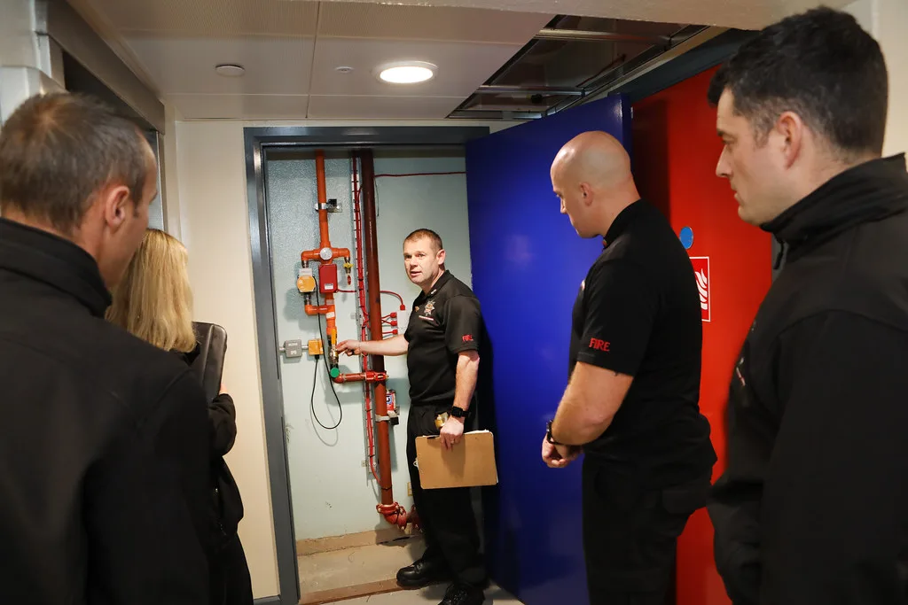

정부, 쿠팡 대구 풀필먼트센터 화재안전 합동점검…물류로봇도 살폈다
행정안전부가 관계기관과 함께 26일 대구광역시 달성군에 있는 쿠팡 대구 풀필먼트센터를 방문해 대형 물류시설의 화재 안전관리 실태를 점검했다. 지방정부와 한국전기안전공사, 한국가스안전공사, 소방·건축 분야 민간 전문가 등 모두 7개 기관이 참여한 이번 합동점검은 올해 7월 이후 인천 지역 물류센터에서 화재가 잇따라 발생한 데 따른 후속 조치로 마련됐다. 여러 기관이 동시에 참여해 전기·가스·건축·소방 등 다양한 분야를 종합적으로 살핀 것은 그만큼 대형 물류시설의 화재 위험 요인이 복합적이라는 인식을 반영한다.
이번 점검의 핵심은 정부가 그동안 발표해온 물류센터 화재안전 대책이 현장에서 실제로 얼마나 이행되고 있는지를 확인하는 데 있었다. 특히 화재 발생 시 초기 진압을 어렵게 만드는 중층 적재 구조와, 화재 위험성이 높은 리튬 배터리를 탑재한 물류로봇의 안전관리 실태를 중점적으로 살폈다. 대형 물류센터일수록 적재 높이가 높고 통로가 좁아 초기 진화가 지연되기 쉽다는 점이 그동안 반복적으로 지적돼 온 문제다. 통로 폭과 적재 높이에 대한 기준을 두고도 현장 여건에 따라 편차가 크다는 지적이 제기돼 온 만큼, 이번 점검에서는 실제 매장 구조가 기존 대책과 얼마나 부합하는지도 함께 살핀 것으로 전해진다.

물류로봇 안전관리가 새롭게 점검 항목에 포함된 배경도 눈길을 끈다. 최근 대형 물류센터들이 작업 효율을 높이기 위해 리튬 배터리 기반의 자율주행 로봇 도입을 늘리고 있는데, 리튬 배터리는 손상되거나 과열될 경우 일반 화재보다 진압이 까다로운 열폭주 현상을 일으킬 수 있어 새로운 안전 변수로 떠오르고 있다. 정부가 이번 점검에서 이 부분을 별도로 들여다본 것도 이런 우려를 반영한 조치로 풀이된다. 자동화 설비가 늘어날수록 배터리 보관·충전 구역에 대한 별도의 화재예방 기준이 필요하다는 목소리도 전문가들 사이에서 꾸준히 제기돼 왔다.
앞서 인천 지역에서는 올여름 물류센터 화재가 잇따라 발생하며 사회적 우려를 키웠다. 대형 창고형 시설의 특성상 한번 불이 나면 진화까지 상당한 시간이 걸리고, 내부에 쌓인 물품과 구조물로 인해 소방 인력의 접근 자체가 어려운 경우가 많았다. 이런 사례가 반복되면서 정부 차원의 제도 점검 필요성이 꾸준히 제기됐고, 이번 대구 현장점검도 그 연장선에서 이뤄졌다.

정부는 이번 점검에서 확인된 현장 실태를 바탕으로 기존 물류센터 화재안전 대책의 실효성을 재검토하고, 필요한 경우 제도적 보완 사항을 추가로 마련한다는 방침이다. 단순히 한 차례 현장을 둘러보는 데 그치지 않고, 점검 결과를 정책에 반영해 유사한 대형 물류시설 전반의 안전기준을 끌어올리겠다는 취지로 해석된다. 이를 위해 이번 점검에 참여한 각 기관은 분야별로 확인한 문제점을 취합해 후속 대책 마련 논의에 반영할 예정인 것으로 알려졌다.
대형 물류센터는 전자상거래 확산과 함께 계속 늘어나는 추세여서, 화재안전 관리의 중요성은 앞으로 더 커질 수밖에 없다는 지적이 나온다. 이번 합동점검을 계기로 물류업계 전반에서 중층 적재 구조 개선과 리튬 배터리 장비 안전관리 강화 등 실질적인 변화가 뒤따를지 주목된다. 정부와 업계가 이번 점검 결과를 어떻게 제도화하느냐에 따라, 유사 시설을 운영하는 다른 물류기업들의 안전관리 방식에도 적잖은 영향을 미칠 것으로 보인다.